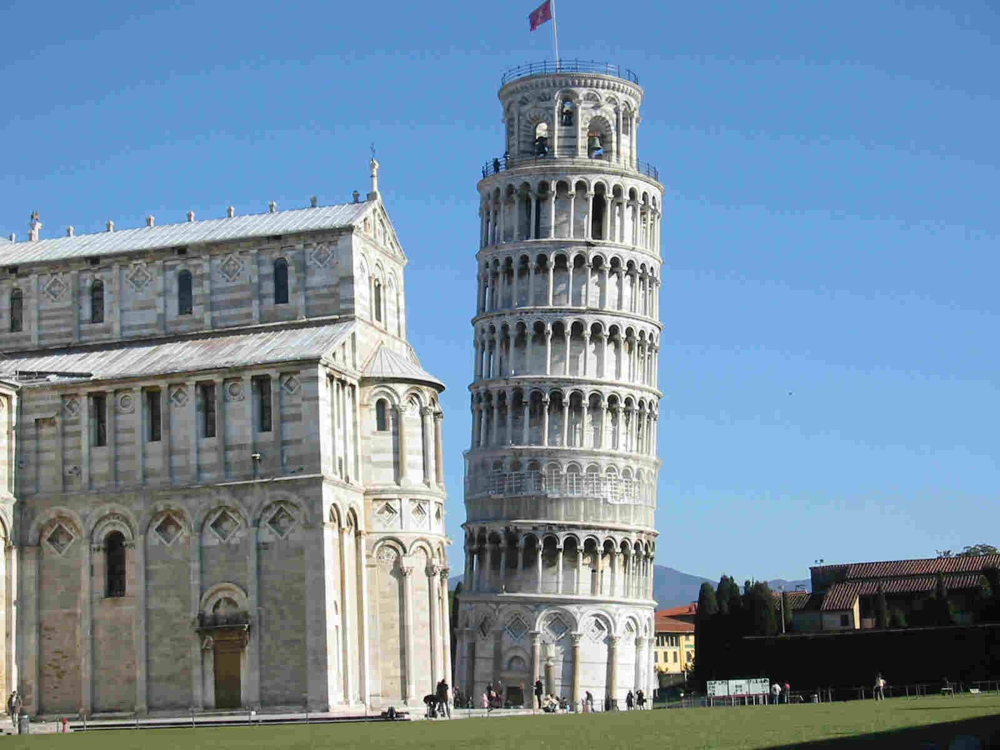
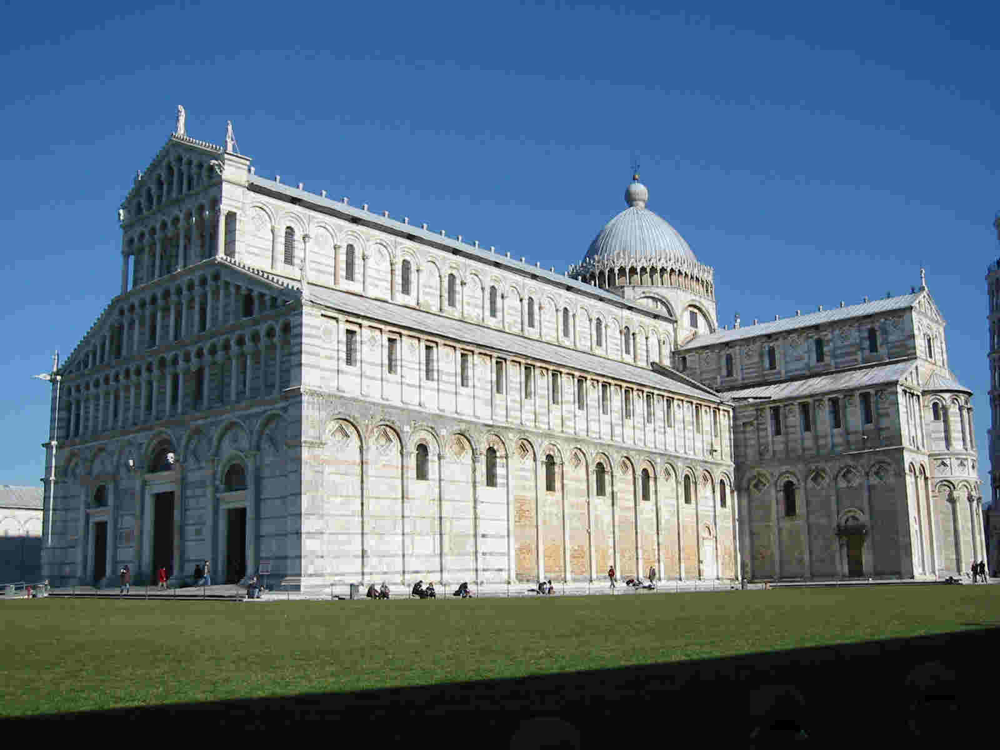
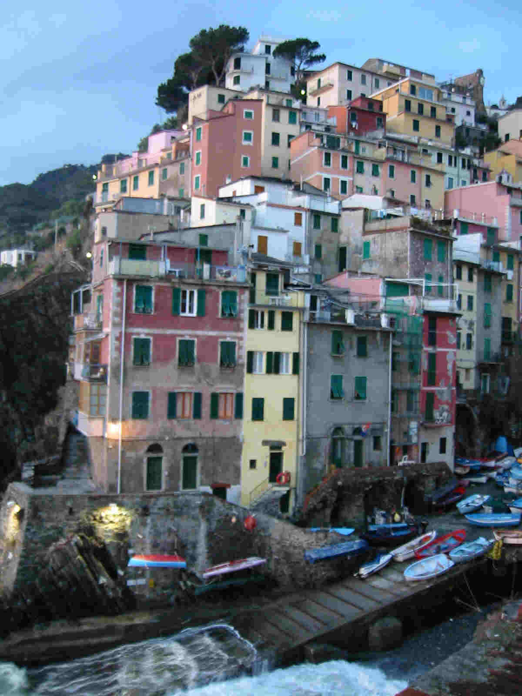
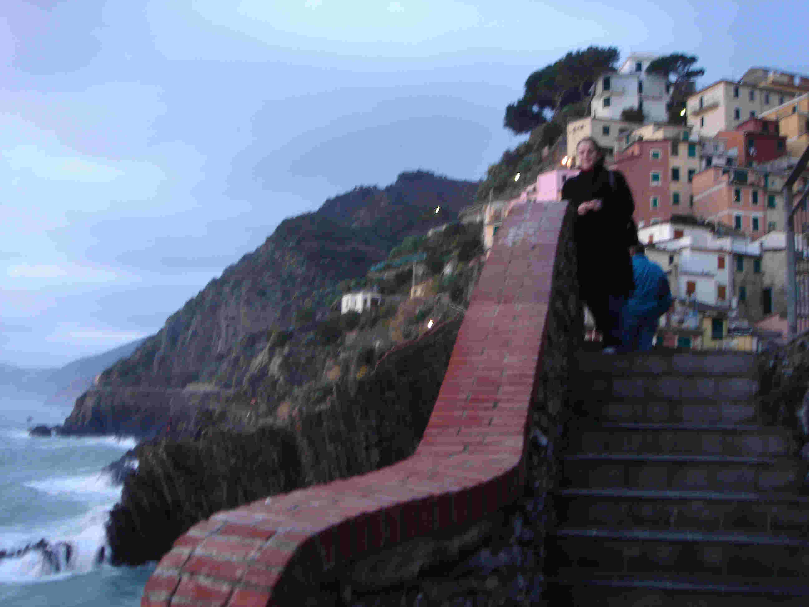

Home
Wedding
Accommodations Travel info
Other Info Photo Gallery
 |
Edward Ercegovic & Debra Ruth |
Things to do
around Artimino |
Leaning Tower of Pisa
The city of Pisa is a 30 minute drive from Artimino. It is a great
trip for an afternoon!


|
Cinque Terre
The Cinque Terre (5 lands) is a National Park
located two hours from Artimino. It boasts one of the
countries most dramatic coastal settings, with cliffs so harsh and
unyielding, that for centuries these fishing hamlets were linked to
each other only by boat or a network of mule paths strung along the
cliffs. Today, the first two towns can be reached by car while
others can be reached by boat or foot. There is a well marked hiking path to travel
between the villages. More information:
Cinque Terre
|
 |
 |
|
Ceramics
The area around Artimino is known throughout the world for ceramic
production. The town of Montelupo (5km from Artimino) has several
ceramic shops in the city center. Definitely worth a
visit! Tours Our Wedding
Coordinator can also help arrange tours throughout various regions
Italy. Please contact her for information:
Debora Vedovi,
Regency San Marino
deborav@omniway.sm
|
Florence (Firenze)
Florence is only 12 miles east of Artimino and has many great places to
visit, along with incredible restaurants. More information:
Florence, Italy
Florence by Net
Shopping in Florence
This site was last updated
03/06/06